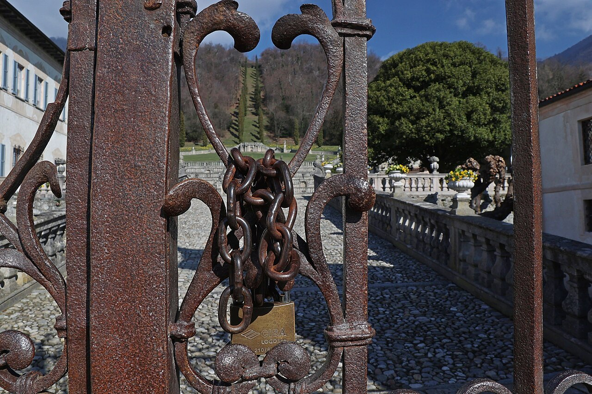
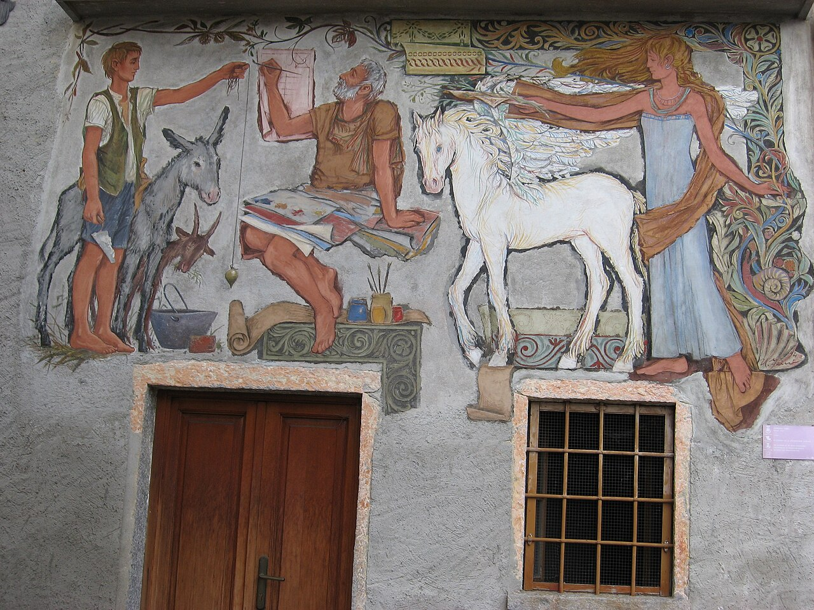

Ecco i luoghi più significativi della valle e dei dintorni immediati, tra arte, storia e natura.
Villa della Porta Bozzolo – Casalzuigno

Dimora seicentesca ampliata nel Settecento, con saloni affrescati in stile rococo e un monumentale giardino all’italiana a terrazze. Dal 1989 è gestita dal FAI e aperta al pubblico.
Arcumeggia – il paese dipinto

Dal 1956 le facciate delle case e le cappelle della Via Crucis ospitano affreschi di artisti contemporanei (Funi, Dova, Sassu, Usellini, Saetti e altri). È considerato il primo “paese dipinto” d’Italia.
Orrido di Cunardo

Complesso carsico scavato dal torrente Margorabbia: gallerie e grotte (tra cui l’“Antro dei Morti”) percorribili in parte a piedi. È uno dei fenomeni idrogeologici più interessanti della Lombardia.
Badia di San Gemolo – Ganna
Abbazia di origine romanica (fine XI secolo) a Ganna, in Valganna, a pochi chilometri. Conserva i resti del martire San Gemolo e ospita un museo con reperti archeologici e oggetti della vita quotidiana del territorio.
Museo della Linea Cadorna – Cassano Valcuvia
Centro documentale dedicato alle fortificazioni della Prima Guerra Mondiale (Frontiera Nord) e alla battaglia di San Martino. Nei dintorni sono ancora visibili tratti di trincee e opere militari.
Parco Regionale Campo dei Fiori
Istituito nel 1984, tutela i massicci del Campo dei Fiori e del Monte Martica. Boschi di faggio e castagno, sentieri, belvedere e siti di interesse storico-naturalistico. La Valcuvia ne costituisce il versante settentrionale.
Altri luoghi di interesse
- Lago di Ghirla – piccolo lago di origine glaciale, ideale per una pausa.
- Cascate di Cittiglio – raggiungibili con sentieri segnalati.
- Rocca di Orino – antica fortezza del XII secolo con vista sulla valle.
- Pista ciclopedonale Valcuvia – tra le più belle della provincia di Varese, collega i borghi e il Lago Maggiore.